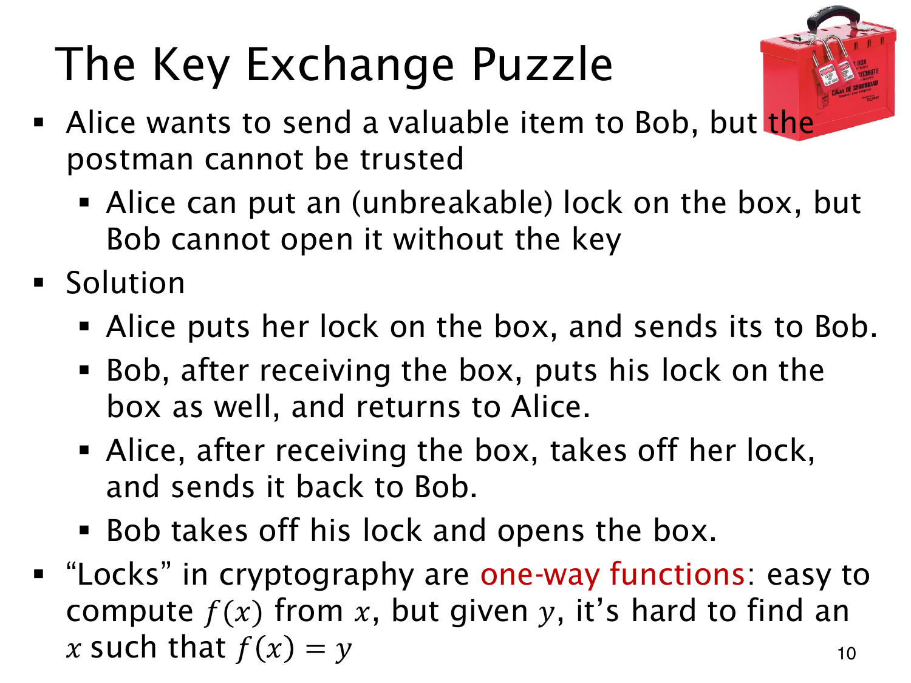

L1.14 · 第 10 页讲解原文
查看这一页课件

两把锁为何能避免寄送钥匙
Alice 要经由不可信的邮差把贵重物品寄给 Bob。只加 A 锁，Bob 没钥匙打不开；将钥匙与箱子一起寄出，邮差又可能得到钥匙。
双锁过程分三次寄送：
- Alice 加 A 锁，寄给 Bob。
- Bob 再加 B 锁，将双锁箱寄回。
- Alice 只拆 A 锁，再寄给 Bob。
最后 Bob 拆 B 锁开箱。箱子每次在路上至少有一把锁，双方都没有寄钥匙。
这个过程要求两把锁能独立装卸：B 锁不能挡住 Alice 拆 A 锁，拆一把也不能破坏另一把。数学协议同样需要合适的运算结构，任意叠加两个加密函数未必能这样运行。
one-way function（单向函数）提供了相应的构造思路：由 x 算 f(x) 容易，仅给 y 却难找满足 f(x)=y 的输入。“难”指计算成本，并非逻辑上没有原像。双锁比喻本身不构成安全证明，一般单向函数也不会自动赋予持有秘密者解密能力；还需说明双方的具体计算与第三方缺少的能力。